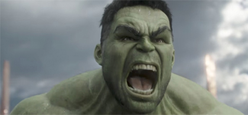
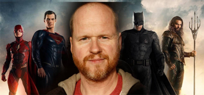
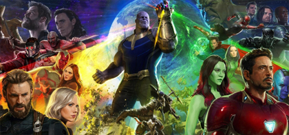
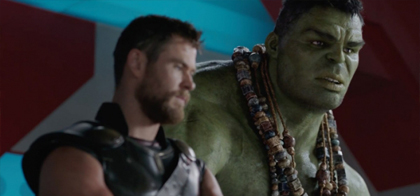
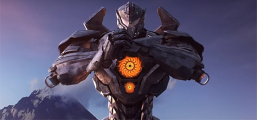
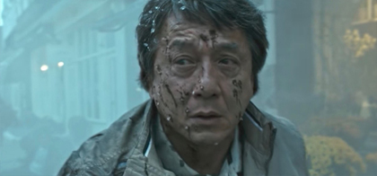
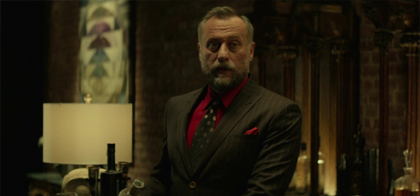
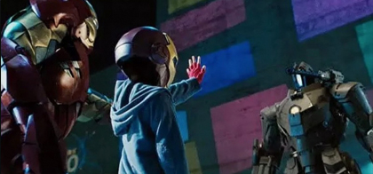

ผู้กำกับอธิบายสาเหตุที่ทำให้ฮัลค์พูดได้ในหนัง
Thor: Ragnarok
ตั้งแต่ฮัลค์ปรากฏตัวในจักรวาลหนังมาร์เวล เราแทบจะไม่ได้ยินคำพูดของเขาเลยครับ
แต่ถึงอย่างนั้นในหนัง The Avengers ฮัลค์ก็ยังมีประโยคเด็ดที่ทำให้แฟนๆต้องจดจำ
ในฉากต่อสู้(หรือตบเกรียน)กับโลกิด้วยคำพูดที่ว่า"เทพกระจอก(Puny God)"
กระทั่งตัวอย่างล่าสุดของ Thor: Ragnarok ที่ออนไลน์ออกมาเมื่อสัปดาห์ที่แล้ว
(อ่านต่อ)

ผมเพิ่งรู้ว่าผู้กำกับ Avengers ข้ามฝั่งมากำกับ
Justice League!?
ผมเพิ่งรู้ว่าผู้กำกับ Avengers ข้ามฝั่งมากำกับ Justice League!?
ส่วนตัวผมเพิ่งจะทราบข่าวใหญ่ที่ใหญ่มากๆเกี่ยวกับวงการภาพยนตร์ซูเปอร์ฮีโร่ครับ
เนื่องจากเมื่อช่วงปลายเดือนพฤษภาคมที่ผ่านมามีรายงานเปิดเผยออกมาว่าจอส วีดอน
ผู้กำกับ The Avengers และ Avengers: Age of Ultronหนังรวมฮีโร่ของค่ายมาร์เวล
ได้ย้ายข้ามฝั่งไปนั่งแท่นกำกับ Justice League หนังรวมฮีโร่ของค่า...(อ่านต่อ)

มาร์เวลปฏิเสธที่จะออนไลน์ฟุตเทจแรกของ
Avengers: Infinity War จากงานคอมมิค-คอน
ในงานคอมมิค-คอนปีนี้ ไฮไลท์แบบสุดๆน่าจะต้องยกให้กับการฉายฉากฟุตเทจแรกของ
Avengers: Infinity War ให้แฟนๆที่มาร่วมงานได้รับชมครับ แต่ทว่าทางมาร์เวลยัง
ตัดสินใจ
ที่จะยังไม่ออนไลน์ฉากฟุตเทจที่ว่านี้ออกมาในโลกอินเทอร์เน็ต(เหมือนที่เคยๆทำกันมานั่นแหละ)
งานนี้ต้องมารอดูกันว่ามาร์เวลจะใจอ่อน ยอมปล่อยฟุตเ...
(อ่านต่อ)

ฮัลค์และทอร์จับเข่าคุยในตัวอย่างใหม่ Thor: Ragnarok
ผมเพิ่งมานึกออกว่าตอนนี้ทางฝั่งอเมริการมีงานคอมมิค-คอน ด้วยเพราะงานนี้มีการจัด
ในช่วงเดือนกรกฎาคมของทุกปีและสิ่งที่พิเศษของงานนี้คือ ค่ายหนังมักจะเอาตัวอย่าง
หนังใหม่
หรือเปิดเผยข้อมูลสำคัญของหนังในเครือของพวกเขา ล่าสุดเมื่อคืนนี้ทาง
มาร์เวลได้ออนไลน์
ตัวอย่างใหม่ของ Thor: Ragnarok ออกมาทางยูทูป ตัว...
(อ่านต่อ)

โครงการเยเกอร์ถูกก่อตั้งใหม่อีกครั้งในทีเซอร์แรกของ
Pacific Rim: Uprising
เมื่อคืนนี้ทางลีเจนดารี่ได้ออนไลน์ตัวอย่างทีเซอร์ของ Pacific Rim: Uprising ออกมาครับ ทว่าเนื้อหายังไม่มีการกล่าวถึงเนื้อเรื่องของภาพยนตร์ แต่จะนำเสนอในรูปแบบโฆษณาโครงการเยเกอร์ที่ถูกก่อตั้งขึ้นมาอีกครั้งในนามของโครงการเยเกอร์อัพไรซ์ซิ่งตัวอย่างจะเผยให้เราได้เห็นหุ่นเยเกอร์รุ่นใหม่ถึง 7 ตัวและแ...
(อ่านต่อ)

เฉินหลงเผยด้านมืดในตัวอย่างหนังแอคชั่นระทึกขวัญ
The Foreigner
ช่วงหลังมานี่ผมไม่ค่อยติดตามผลงานการแสดงของเฉินหลงสักเท่าไรทั้งๆที่เฮียแกก็มีผลงาน
ออกมาหลายเรื่อง อาจจะเพราะเนื้อหาหนังดูไม่ค่อยถูกจริตผมสักเท่าไร และเฮียแกก็แก่มากแล้ว
บทแอคชั่นเลยดูไม่ค่อยถึงพริกถึงขิงอย่างเมื่อก่อน แต่ถ้าให้ลองนึกย้อนกลับไปถึงผลงานที่ผม
ยังประทับใจก็คงเป็นซีรี่ย์วิ่งสู้ฟัด แล...
(อ่านต่อ)

ไมเคิล นีควิสต์ เสียชีวิตในวัย 56 ปี
เมื่อวานนี้มีรายงานที่น่าเศร้าเปิดเผยออกมาครับว่าวงการภาพยนตร์ฮอลลีวูดต้องสูญเสีย
นักแสดงผู้มีความสามารถไปอีกราย ด้วยข่าวการเสียชีวิตของไมเคิล นีควิสต์ นักแสดงผู้รับบท
ตัวร้ายในหนัง Mission Impossible 4 และ John Wick ได้จากไปอย่างสงบหลังจากที่ต้องสู้
กับโรคมะเร็งมาอย่างยาวนานด้วยวัย 56 ปี ทางเว็บ...
(อ่านต่อ)

[สปอยด์]Spider-Man เคยมาปรากฏตัวในหนัง
Iron Man
พวกเราน่าทราบกันครับว่าปีเตอร์ ปาร์คเกอร์หรือ Spider-Man ปรากฏตัวครั้งแรกในจักรวาล
หนังมาร์เวลใน Captain America: Civil War แต่ดูท่าจะไม่ใช่อย่างนั้นแล้วครับ เมื่อมีรายงาน
เปิดเผยออกมาว่าตัวละครปีเตอร์ ปาร์คเกอร์เคยมาปรากฏตัวในจักรวาลหนังมาร์เวลเมื่อ
นานมาแล้ว ข่าวนี้อาจจะสปอยด์เรื่องราวของ Spider...
(อ่านต่อ)